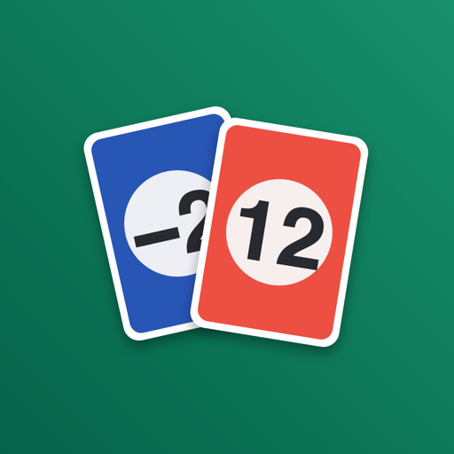

Score Cartes zählt die Punkte bei SkyJo, 6 nimmt! (Six qui prend), Flip 7, Papayoo, UNO, Belote oder jedem anderen Kartenspiel. Fotografiere deine Karten: Die App liest sie direkt auf deinem iPhone und berechnet die Punkte.
Ohne Konto, ohne Werbung, ohne Tracking.

Bei SkyJo, 6 nimmt!, Flip 7 und UNO fotografierst du deine Karten: Die Werte werden auf dem Gerät gelesen, ganz ohne Verbindung. Eine unsichere Karte wird orange markiert; ein Tipp genügt, um sie zu bestätigen oder zu korrigieren. 10 Scans gratis, danach unbegrenzt mit Premium.
SkyJo, 6 nimmt!, Flip 7, Papayoo, UNO und Belote haben ihre Regeln eingebaut. Das freie Spiel zählt die Punkte jedes anderen Spiels: Rommé, Tarot …
Die Partie endet von selbst beim Ziel oder nach einer festen Zahl von Runden, und der Sieger wird angezeigt. Bei Gleichstand entscheiden die gewonnenen Runden. Im freien Spiel können die Spieler das Ende auch selbst festlegen.
Fasse die Partien eines Abends zusammen, filtere Liste und Statistiken danach und sieh, wer den Abend dominiert hat.
Pro Spieler, Spiel oder Spieleabend: gewonnene Partien und Runden, Durchschnitt pro Runde, beste und schlechteste Runde, beste und schlechteste Partie. Mit Premium.
Teile die Ergebnisse einer Partie oder eines Spieleabends als PDF. Die Zusammenfassung ist gratis; mit Premium enthält der vollständige Bericht auch Statistiken, Rundendetails und eine kurze Zusammenfassung deiner Partien.
Deine üblichen Spieler werden gemerkt, du stellst Gruppen zusammen, und der Geber wechselt von Runde zu Runde von selbst.
Die Regeln jedes Spiels sind in der App, genau wenn du sie brauchst: Einen Streit klärst du in zwei Tipps.
Deine Partien erscheinen über deine iCloud auf deinen anderen Geräten. Die App gibt es auf Französisch, Englisch und Deutsch.
Score Cartes hat weder Konto noch Server. Deine Partien werden auf deinem Gerät gespeichert und, wenn du möchtest, über deine eigene iCloud synchronisiert, auf die der Herausgeber keinen Zugriff hat. Die Kartenfotos werden auf dem Gerät ausgewertet und nie gespeichert, und es gibt weder Werbung noch Tracking.
Datenschutzerklärung lesen →